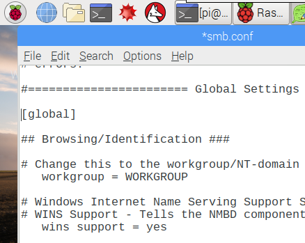
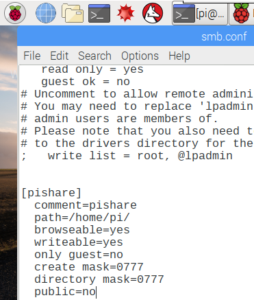
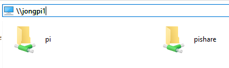
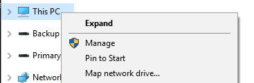
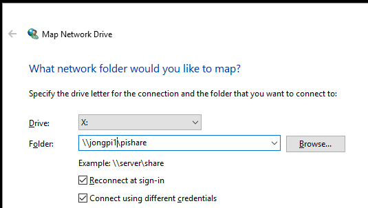
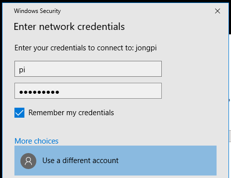
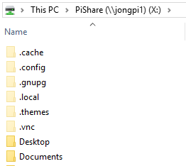
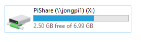

As part of your normal Raspberry Pi dev workflow you’re going to want to access the files of the Raspberry Pi from your host dev machine. Here’s how to create a file share with Samba.
Create a File Share
This allows you to access your Raspberry Pi files from your desktop machine.
Run Update
|
Install Samba
Open Terminal and run the following:
|
Configure Samba
|
Configure Network Name
Scroll down to the Global Settings section:
- Set workgroup to the name of your workgroup or domain name
- Change ‘wins support’ from ‘no’ to ‘yes’
|

Configure File Share
Scroll down to the bottom of the /etc/samba/smb.conf file and paste in the following:
|

This will share your entire home directory. If you’d like to limit access to a subdirectory, just create a directory and change the ‘path’ variable.
Save smb.conf
Hit CTRL+O and then ENTER to save the file.
Then Hit CTRL+X to exit nano.
Set File Share Password
Open Terminal and execute the following to set the Samba password for the ‘pi’ user.
This password can be different than the regular Pi user password.
|
You’ll need to enter the password twice.
Restart the samba service.
|
Access Pi File Share from Windows
You can now access the file share you just created on your desktop machine
- Open Windows Explorer, type in your Pi hostname and you will see the share

Map Network Drive to Share
I like to do this so I can easily access the files without having to type in the Hostname everytime.
- Right click on ‘This PC’ in Windows Explorer and select ‘Map network drive…’

- Enter path to Pi share and check ‘Connect using different credentials’

- Select ‘Use a different account’ and enter ‘pi’ and ‘raspberry’ (or whatever you set your Samba user/password to). Check ‘Remember my credentials’ so you don’t get prompted everytime you access the share.

- You will now be able to access the share via drive letter


Jon